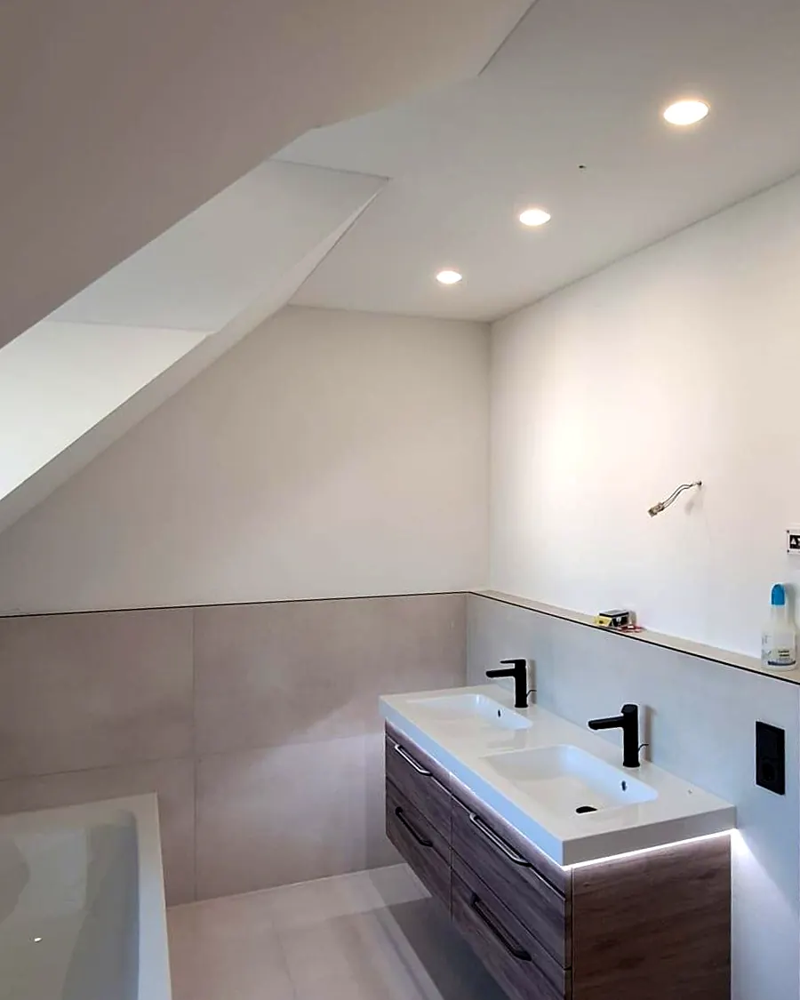
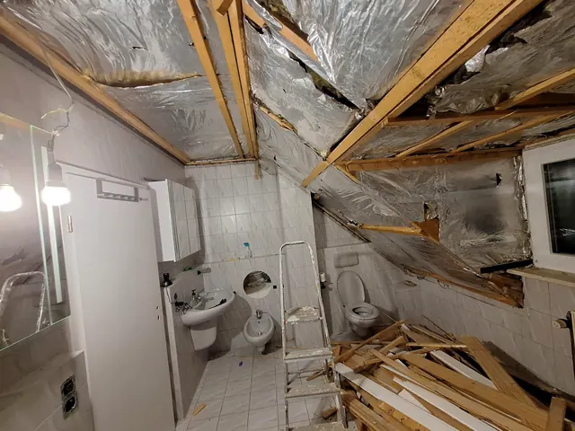
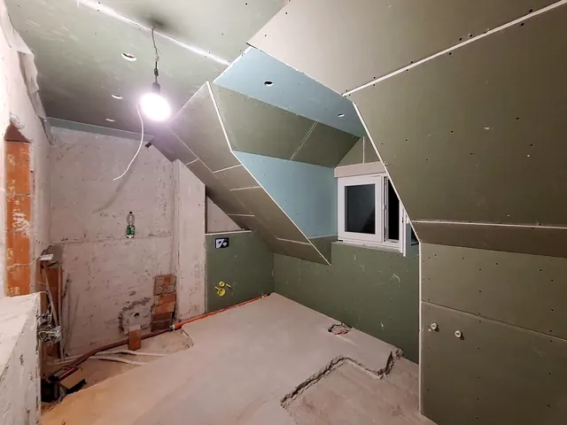

Kernsanierung
Vom kompletten Abbruch bis zur schlüsselfertigen Übergabe: Installationen, Wände, Decken, Böden und Malerarbeiten.
Mehr erfahrenATS Trockenbau · Augsburg
Trockenbau, Kernsanierung und Innenausbau, schlüsselfertig aus einer Hand. Für Privat, Gewerbe und Hausverwaltungen in Augsburg und 100 km Umkreis.

So entsteht eine Wand
UW-Profile an Boden und Decke, CW-Ständer im Raster von 62,5 cm. Das Gerüst entscheidet, wie gerade die Wand wird.
Mineralwolle zwischen den Ständern bringt Schallschutz und, je nach Aufbau, Brandschutz.
Gipsplatten 12,5 mm, einfach oder doppelt verschraubt. Im Bad mit imprägnierten Platten.
Fugen und Schraubköpfe werden gespachtelt und geschliffen, in der Qualitätsstufe, die Sie brauchen.
Eine glatte Fläche, bereit für Farbe, Tapete oder Fliesen. Übergabe besenrein.
Leistungen
Vom einzelnen Durchbruch im Altbau bis zum kompletten Büroausbau. Mit geprüften Systemen der bekannten Plattenhersteller.
Vom kompletten Abbruch bis zur schlüsselfertigen Übergabe: Installationen, Wände, Decken, Böden und Malerarbeiten.
Mehr erfahrenNeue Raumaufteilung ohne Nassarbeiten. Einfach oder doppelt beplankt, mit Türzargen und Revisionsöffnungen.
CW 50 · 75 · 100Glatte Decken unter Altbau- oder Betondecken, mit Platz für Leitungen, Lüftung und Einbauleuchten.
CD-Profil · Direktabhänger · NoniusDämmung, Dampfbremse und Verkleidung von Schrägen und Kehlbalken. Aus dem Speicher wird Wohnraum.
Luftdicht nach DIN 4108-7Brandwände, Wände, Decken, Schächte und Stahlträgerbekleidungen bis F90 und darüber. Dazu Abschottungen für Kabel und Rohre, geschult bei ZAPP-ZIMMERMANN.
F30 · F60 · F90 und höher · AbschottungenRuhe zwischen Räumen und bessere Sprachverständlichkeit in Büro, Praxis und Gastronomie.
Lochplatten · MineralfaserLeitungen verschwinden hinter der Wand, alte Mauern werden gerade. Ideal für Bad und Küche.
GKBI imprägniert für FeuchträumeFugen, Kanten und Flächen streichfertig, von der Grundverspachtelung bis Q4.
Q1 · Q2 · Q3 · Q4Neue Böden und schnell belegbarer Trockenestrich ohne Trocknungszeit. Gut für Holzbalkendecken im Altbau.
Unterböden · Trockenestrich · BelägeStreichen, Spachteln und Glätten, damit die Räume nach dem Umbau fertig sind.
Innenanstrich · Q3/Q4-FlächenAuch außen aus einer Hand: Arbeiten an der Fassade im Rahmen einer Sanierung.
Sanierung · AnstrichKernsanierung
Bei einer Kernsanierung bleibt nur der Rohbau stehen. Danach bauen wir alles neu auf, schlüsselfertig und mit einem Ansprechpartner für das ganze Projekt.

01
02 03
03
Ein Projekt, drei Phasen: Badsanierung im Dachgeschoss.
Projekte
Ein Blick auf echte Aufträge, vom Ständerwerk bis zur fertigen Fläche. Mehr Bilder auf Instagram
„Das Trockenbau-Team hat bei uns hervorragende Arbeit geleistet.“
„Herausragende Arbeit und absolute Zuverlässigkeit!“
„Super Arbeit, auch die kniffligere Seite mit 2 Dachschrägen wurde korrekt abgehängt.“
„Wir hatten einen Plan von einer Innendesignerin und die Firma ATS hat sich sehr präzise an den Plan gehalten …“
„Klasse Arbeit von Milos bei der Dämmung unseres Dachbodens, freundliches Team, gutes Preis-/Leistungsverhältnis.“
„Zeitplan und Preis wurde wie besprochen eingehalten“
Auszüge aus öffentlichen Bewertungen, gekürzt, Namen abgekürzt. Gesamtwertung laut Trustlocal, Stand November 2026. Wir prüfen nicht selbst, ob jede Bewertung von einem Kunden stammt, der die Leistung genutzt hat.
Oberflächen
Die Stufen Q1 bis Q4 legen fest, wie eben eine Gipsplattenwand gespachtelt wird. Wählen Sie eine Stufe und sehen Sie den Unterschied im Streiflicht.
Fugen gefüllt, Schraubköpfe überspachtelt. Fugen und Schrauben bleiben im Licht sichtbar.
Geeignet für: Fliesen, weitere Verkleidung
Fugen nachgespachtelt und stufenlos an die Plattenfläche angeglichen.
Geeignet für: Raufaser, grobe Tapeten, matte Farbe
Fugen breit ausgespachtelt, die ganze Fläche scharf abgezogen.
Geeignet für: Feine Tapeten, feine matte Anstriche
Die gesamte Fläche wird überzogen und geglättet. Keine Spuren, auch nicht im Streiflicht.
Geeignet für: Glanzlack, Metalltapete, große Fensterflächen
Ablauf
Sie beschreiben Ihr Vorhaben per Formular oder Telefon, gern mit Fotos oder Grundriss.
Wir kommen kostenlos vor Ort, nehmen Maß und klären Details wie Brand- oder Schallschutz.
Sie erhalten ein schriftliches Angebot mit klarer Leistungsbeschreibung und Termin.
Sauber und termingerecht, mit Schutz von Boden und Möbeln. Abfall nehmen wir mit.
Gemeinsame Begehung und Übergabe. Kleine Aufträge rechnen wir nach Fertigstellung ab, größere in Abschlägen.
Einsatzgebiet
Von Augsburg aus arbeiten wir in ganz Schwaben und weiten Teilen Oberbayerns, bis Ulm, München, Ingolstadt und ins Allgäu.
Häufige Fragen
Das hängt vom Aufbau, der Fläche und der gewünschten Oberfläche ab. Nach der kostenlosen Besichtigung bekommen Sie ein schriftliches Angebot, in dem jede Position nachvollziehbar aufgeführt ist.
Eine einzelne Wand steht oft in wenigen Tagen, inklusive Spachteln. Den genauen Zeitplan finden Sie in unserem Angebot.
Trockenbau ist deutlich sauberer als Mauern und Putzen. Wir decken Böden und Möbel ab, nehmen den Schutt mit und übergeben die Baustelle besenrein.
Für nichttragende Innenwände in der Regel nicht. In Mietwohnungen braucht es die Zustimmung des Vermieters. Bei Brandschutzanforderungen stimmen wir den Aufbau vorab mit Ihnen ab.
Ja. Vom Abbruch und Abtransport über Wände, Decken und Böden bis zu Malerarbeiten und Fassade. Elektro und Sanitär übernehmen unsere Partner-Fachbetriebe, abgestimmt durch uns. Sie haben einen Ansprechpartner für alles.
Kleinere Aufträge rechnen wir nach Fertigstellung ab. Bei größeren Projekten stellen wir Abschlagsrechnungen nach Baufortschritt.
Ja. Wir arbeiten für Privatkunden, Firmen und Hausverwaltungen.
Innerhalb von zwei Werktagen, oft schon am selben Tag. Am schnellsten erreichen Sie uns per Telefon oder WhatsApp.
Kontakt
Wir melden uns innerhalb von zwei Werktagen, oft früher, und vereinbaren eine kostenlose Besichtigung.